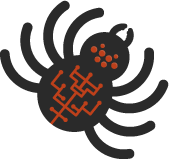

Python爬虫教程（从入门到精通）
网络爬虫（Web Spider）又称“网络蜘蛛”或“网络机器人”，它是一种按照一定规则从 Internet 中获取网页内容的程序。广为人知的“搜索引擎”就是最常见的爬虫程序，比如当我们使用百度引擎搜索关键字时，“百度蜘蛛”就会根据您输入的关键字去互联网资源中抓取相应的页面。
Python 爬虫指的是用 Python 语言来编写爬虫程序。除了 Python 外，其他语言也可以编写，比如 Java、PHP 等，不过相比较而言，Python 更为简单和实用。一方面， Python 提供了许多可以应用于爬虫的库和模块；另一方面， Python 语法简单、易读，更适合于初学者学习，因此 Python 爬虫几乎成了网络爬虫的代名词。网络爬虫主要用途是采集数据，它是数据分析不可或缺的工具之一。许多公司专门设立了 Python 爬虫工程师岗位，该岗位的职责就是为公司的业务拓展提供数据支持。除此之外，网络爬虫也给我们的生活带来便利，比如抢购火车票、飞机票等。教程特点
本套教程专门为 Python 爬虫的初学者打造，是一套非常不错的入门教程，同时它也适用于数据分析师进阶学习。如您对 Python 爬虫充满兴趣，那么本套教程将非常适合您。
本套教程从最简单的网页分析讲起，并对 Python 网络爬虫常用的请求模块、解析模块做了重点讲解。不仅如此，教程中还介绍了与 Python 爬虫有关的 Selenium 框架和 Scrapy 框架。为了让初学者“学到做到”，我们采用了“知识点讲解+爬虫实例分析”相结合的写作方式，降低初学者的学习门槛。通过学习本套教程，您将全面掌握 Python 爬虫的相关知识。阅读条件
在学习这套教程前，您应该已经熟练掌握了 Python 基础知识，并对前端语言以及 SQL 数据库有基本掌握。当然，如果您对网络通信协议（TCP/IP 或HTTP）有一定的了解，那么对学习本套 Python 爬虫教程将大有裨益。
猛击这里开始学习➜关注公众号「站长严长生」，在手机上阅读所有教程，随时随地都能学习。
不定期发布学习路线+书籍文档+优质视频，为初学者指点迷津。
绑定网站登录功能，再也不用担心密码丢失。
编程11年，建站10年，创业7年，写作6年，既有硬知识，也有软技能。
长期更新，坚持原创，敢说真话，凡事有态度。

微信扫码即可关注